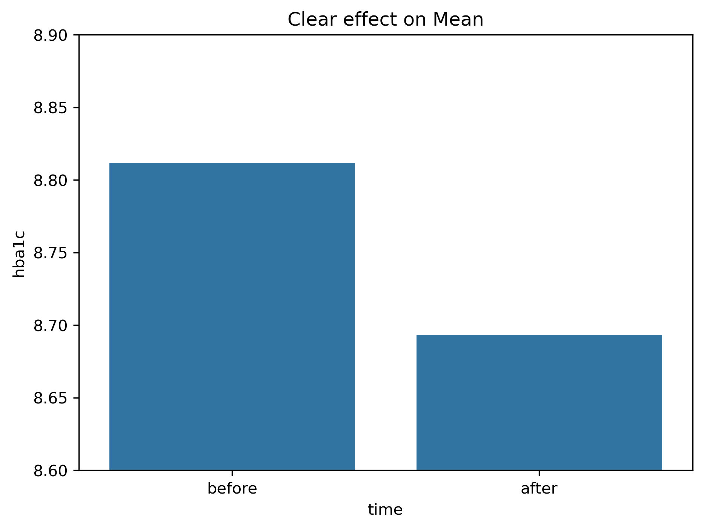
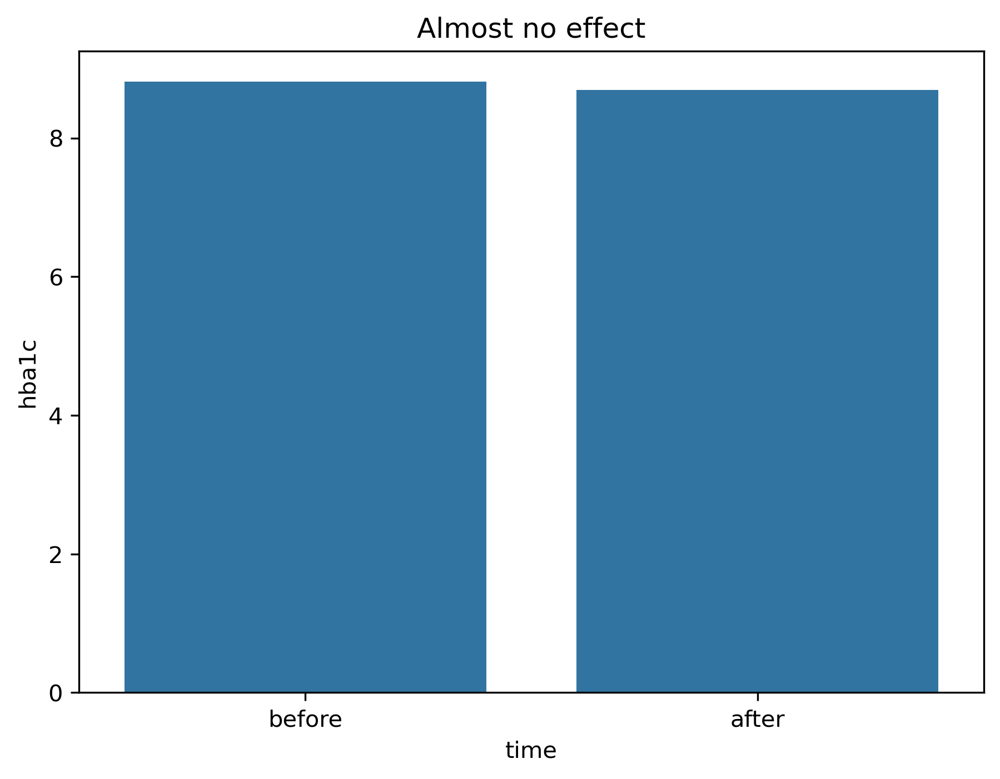
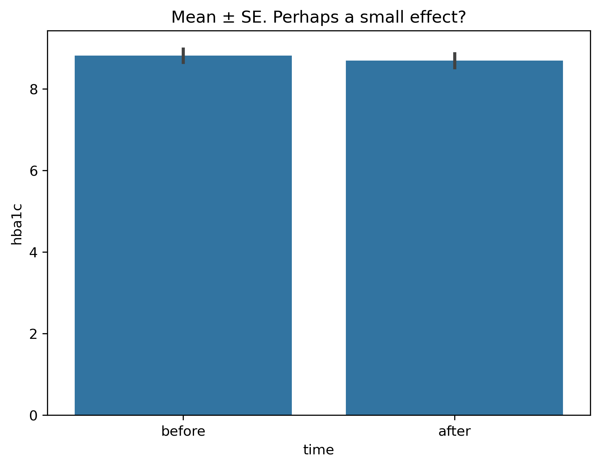
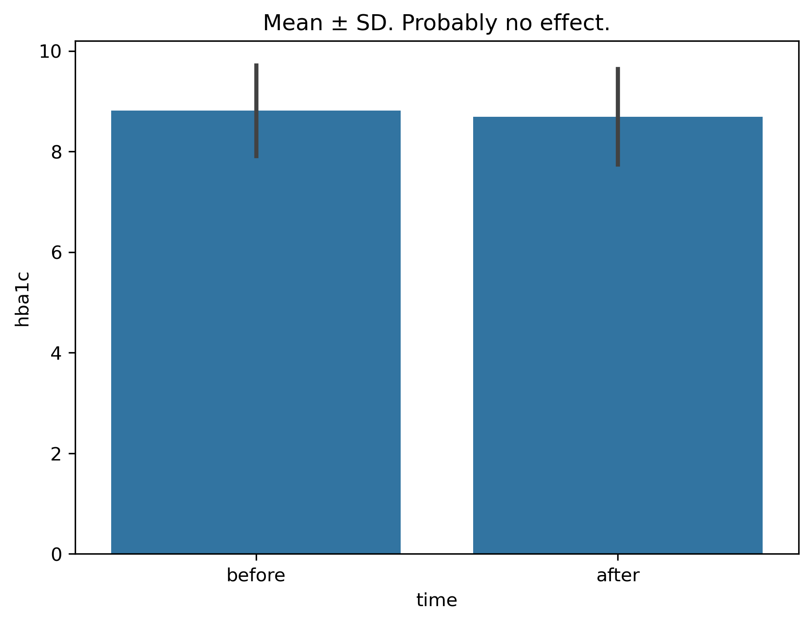
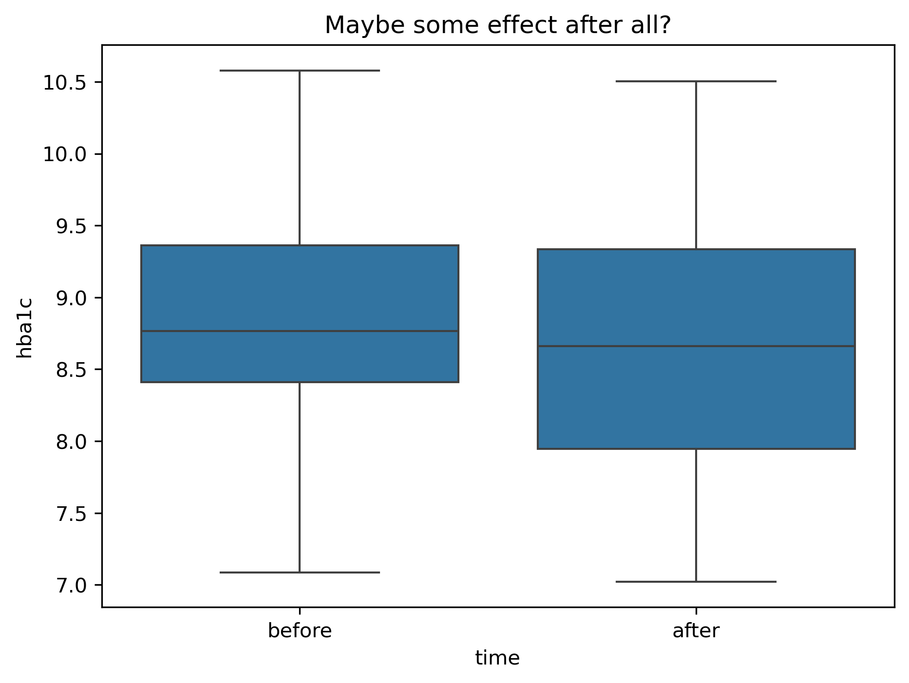
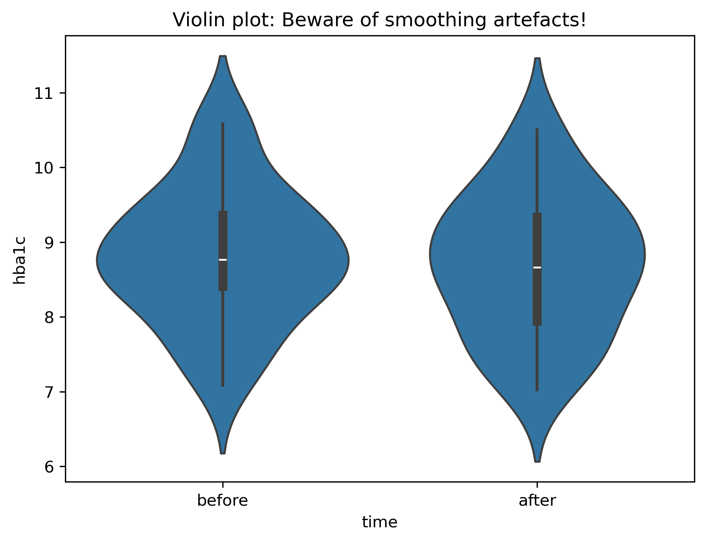
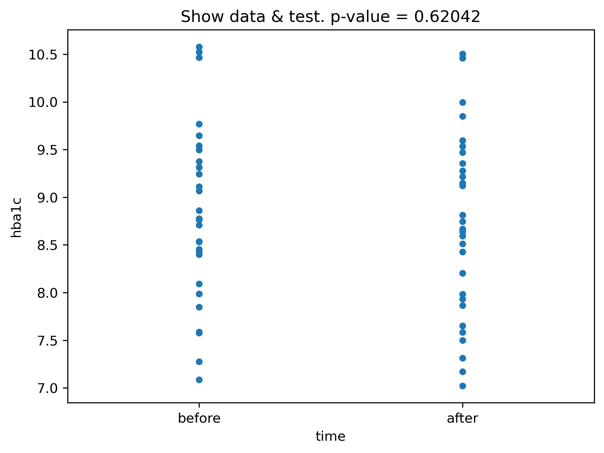
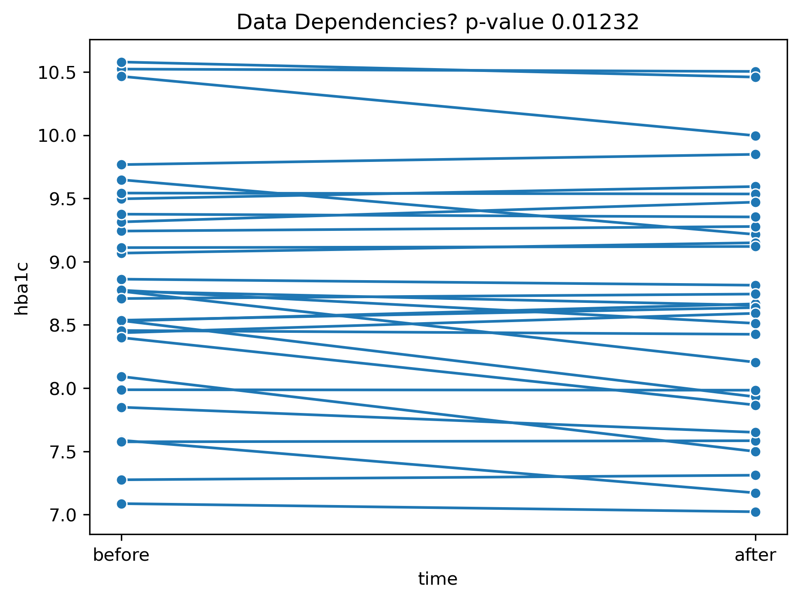
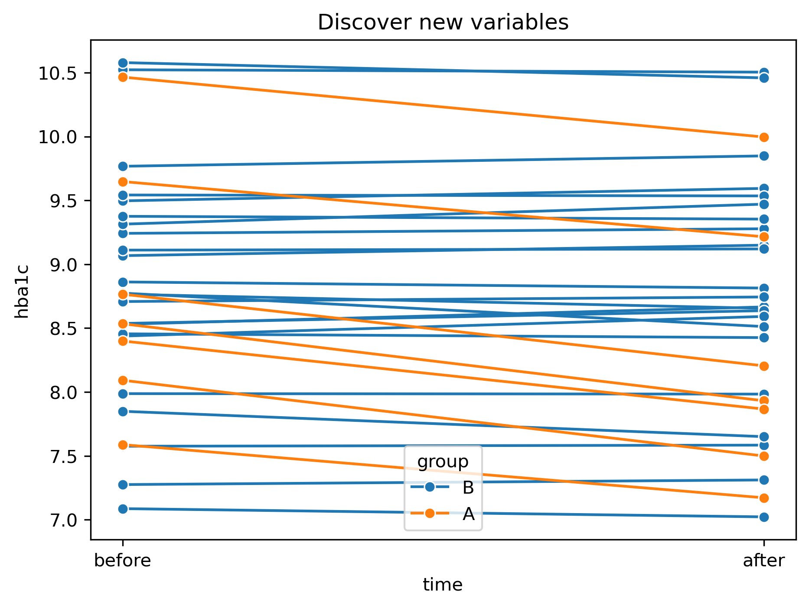

Data Exploration
Software First
Generate synthetic data
This data set will be used throughout this notebook.
The idea is to simulate the effect of a hypothetical drug treatment to lower HbA1c levels in patients with diabetes. We will then explore different ways to visualize the data and interpret the results.
Code
np.random.seed(42)
n = 30
# synthetic HbA1c-Werte [in %]
# normal 5%, ehoeht: 6%, Diabetes mellitus: > 6.5%, 8% Handlungsbedarf
before = np.random.normal(loc=9.0, scale=1, size=n)
# Two treatmentgroups
group = np.random.choice(["A", "B"], size=n, p=[0.25, 0.75])
after = before.copy()
after[group == "A"] -= np.random.normal(0.5, 0.1, size=(group == "A").sum())
after[group == "B"] += np.random.normal(0.0, 0.1, size=(group == "B").sum())
df = pd.DataFrame({
"patient": np.arange(n),
"before": before,
"after": after,
"group": group
})
df[["before","after"]].head()
#print(df[["before", "after"]].mean())
#df.groupby("group").describe().T| before | after | |
|---|---|---|
| 0 | 9.496714 | 9.594269 |
| 1 | 8.861736 | 8.813818 |
| 2 | 9.647689 | 9.215381 |
| 3 | 10.523030 | 10.504464 |
| 4 | 8.765847 | 8.204679 |
- Why do we need to summarize this data?
- Why do we need data visualization
- Which tools?
Data Reshaping
For some visualization tasks it will be better to have data in a long format. We will use the melt function from pandas to reshape the data. I use a categorical time variable to distinguish before and after treatment.
Code
| patient | time | hba1c | |
|---|---|---|---|
| 0 | 0 | before | 9.496714 |
| 1 | 1 | before | 8.861736 |
| 2 | 2 | before | 9.647689 |
| 3 | 3 | before | 10.523030 |
| 4 | 4 | before | 8.765847 |
Barplots
Code

Code

We tend to give meaning to barplot length, rather than position.
Until now we have focused on the mean values. But to discuss any potential treatment effect we will also have to analyse (and visualize) the variability.
Code

Variance Estimate: \[ \sigma^2 = \frac{1}{N-1} \sum_{i=1}^N (x_i - \bar{x})^2 \approx E[(X - \mu)^2] \]
Standard Deviation (SD): \[ \sigma = \sqrt{\sigma^2} \]
Standard Error (SE): \[ SE = \frac{\sigma}{\sqrt{N}} \longrightarrow 0 \text{ for } N \rightarrow \infty \]
The standard error (SE) of the mean is not a measure of variability in the data. For more data it will approach zero. The standard deviation (SD) is a better measure of variability in the data.
Code

Code

Code

The violin plot employs some smoothing to visyualize the distribution. For small data sets this can be misleading. If possible, it is always better to show the data.
A statistical test can be used to support the visual impression.
Code

In the above we have assumed independent samples. But since we have repeated measures (before and after treatment) we should use a paired test. Here I also visualize the dependencies by connecting related data points explicitly with lines. This is only possible if we have a unique identifier for each patient (here: patient variable).
Code

There seems to be a significant reduction in HbA1c levels for some patients. Are there other variables that can explain this difference?
Code
long_group = df.melt(
id_vars=["patient","group"],
value_vars=["before", "after"],
var_name="time",
value_name="hba1c"
)
ORDER = ["before", "after"]
long_group["time"] = pd.Categorical(
long_group["time"],
categories=ORDER,
ordered=True
)
sns.lineplot(data=long_group, x="time", y="hba1c",
units="patient",
estimator=None,
marker="o",
hue="group"
)
t, p = ttest_rel( df["before"], df["after"])
title = f"Discover new variables"
plt.title(title)
plt.show()
But is this also a clinically relevant effect? We should always be careful to distinguish statistical significance from medical significance.
- Don’t cut barplots !
- Show variability in data (clarify SE or SD)
- better show the range \(\to\) boxplots & violinplots
- beware of smoothing violins (especially for small data sets)
- show all the data if you can \(\to\) stripplot
- multimodal distribution & additional group variables?
- data exploration is visual and iterative
- statistical significance \(\ne\) medical significance